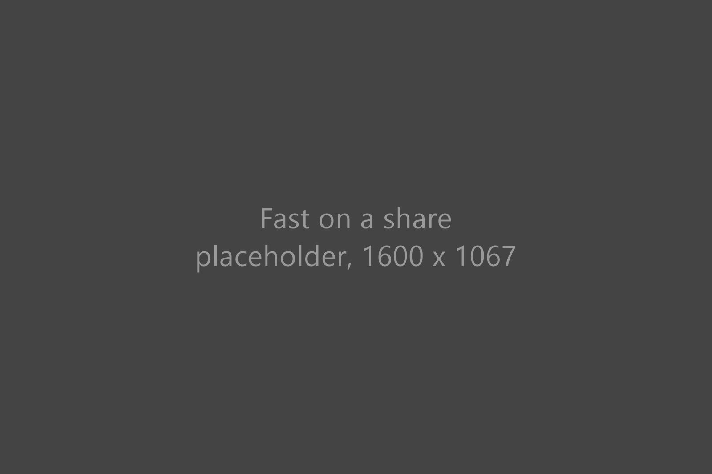
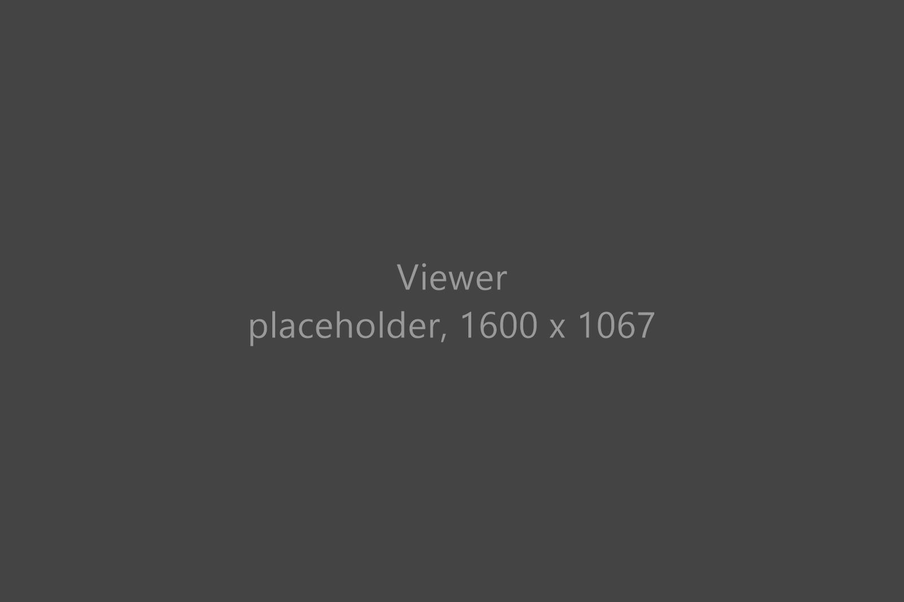
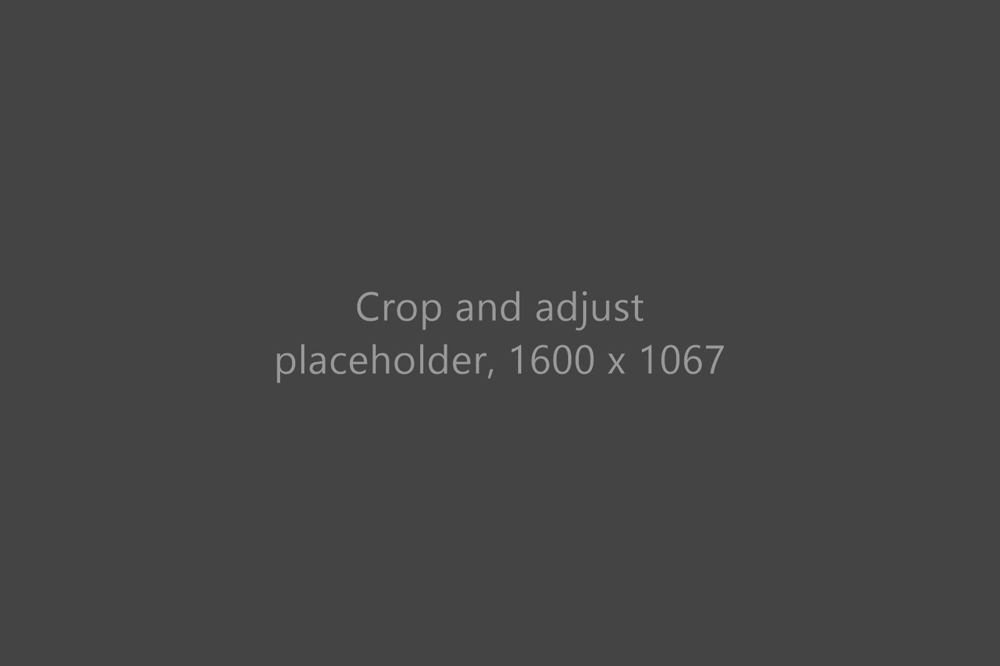
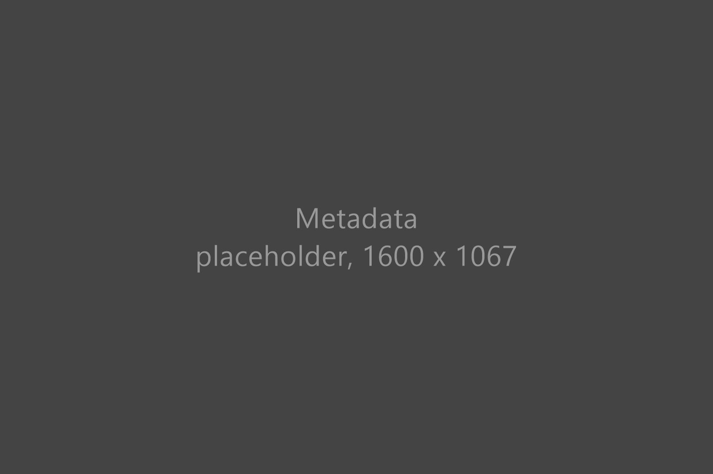
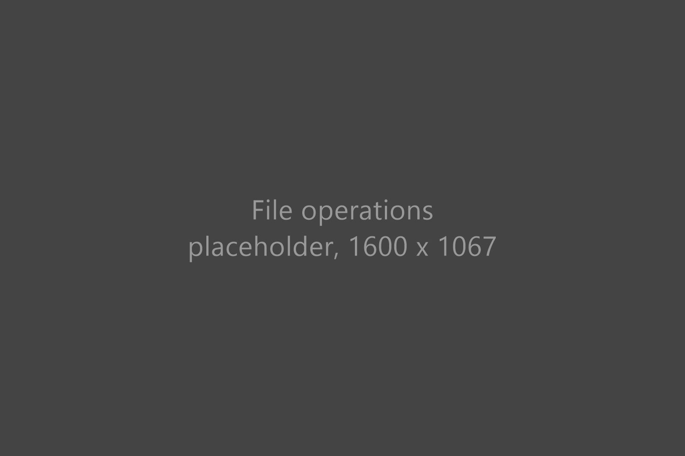
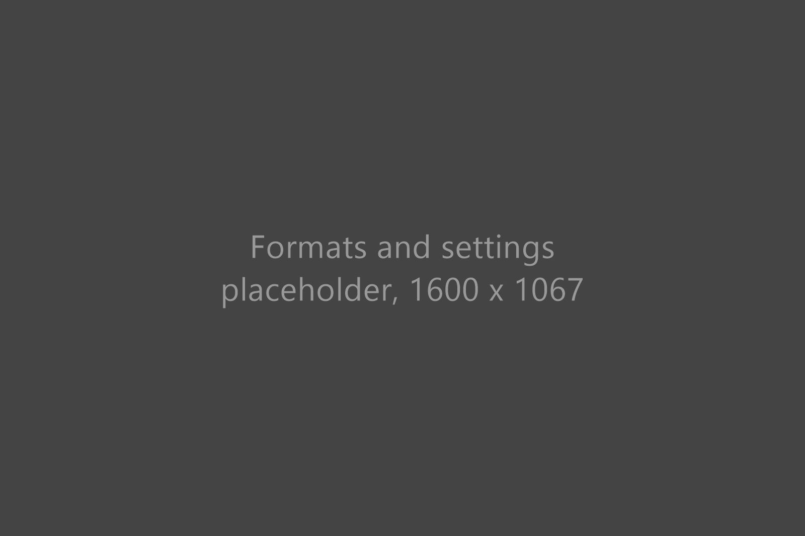

Browse — a thumbnail grid with a folder tree, index overlays and instant sorting.
What's in it
-

Fast where other viewers crawl
Open a folder of ten thousand photos on a network share and start browsing straight away. Pixee shows the thumbnails you are looking at first and quietly fills in the rest behind you.
-

A viewer that keeps up with your arrow keys
Double-click to view, then step through the folder as fast as you can press Next. Zoom to the pixel, pan with a drag, and go fullscreen with one key.
-

Fix a photo without opening an editor
Crop to a fixed ratio, straighten with a rotate, flip, and adjust brightness, contrast, colour and gamma with live sliders. Hold B to compare with the original, then save over the file or as a copy.
-

See what your camera, and your AI tool, recorded
Exposure, lens, date and location from the EXIF, plus the prompt and workflow that ComfyUI or Automatic1111 wrote into the file.
-

Move files without the guesswork
Copy, move and rename in the background while you keep browsing. When a name clashes you see both files side by side with their size and date, so you pick by eye. Batch rename shows every new name before it touches anything.
-

Opens the odd ones too, and it is yours
HEIC from an iPhone, AVIF, Photoshop and GIMP files open like any JPEG. Pick a theme, write a plugin in JavaScript, or read the source. MIT licensed.